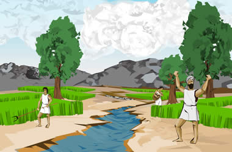

|

When Vritra fell, the cloud-cattle were released from their cave. The rain fell to earth and the seven rivers of the Indus began to flow again. The people felt the rain and saw the flowing rivers, and there was rejoicing throughout the land. | |
| ...previous | |